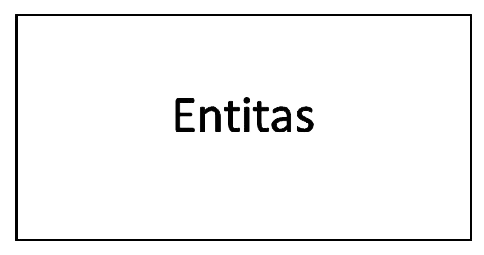
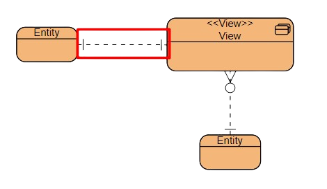
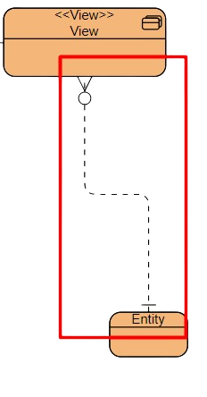

ERD (Entity Relationship Diagram) adalah sebuah gambar atau diagram yang digunakan untuk menggambarkan hubungan antara entitas (objek) dalam sebuah database.
Dalam ERD, entitas (objek) direpresentasikan sebagai kotak dengan atribut-atribut yang terkait dengan entitas tersebut. Hubungan antara entitas ditunjukkan oleh tanda panah atau garis yang menghubungkannya. ERD memungkinkan pengembang database untuk memvisualisasikan struktur database dengan jelas dan memahami bagaimana entitas saling terkait
Bentuknya seperti diagram yang menjelaskan hubungan antar objek data. Untuk menggambarkannya dibutuhkan:
Untuk membuat Entity Relationship Diagram dibutuhkan tiga komponen utama sebagai penyusunnya atau bisa juga disebut sebagai notasi.

Entitas adalah sebuah objek berwujud nyata yang dapat dibedakan dengan objek lainnya. Objeknya dapat bersifat konkret maupun abstrak. Data konkret adalah sesuatu yang benar-benar ada atau dapat dirasakan oleh alat indra, sedangkan abstrak tidak berwujud.
Orang, buku, pegawai, perusahaan merupakan jenis entitas konkret. Berbeda dengan mata kuliah, kejadian, pekerjaan adalah benda tak berwujud.
Pengertian ERD kedua yaitu field atau disebut sebagai atribut. Setiap entitas memiliki atribut untuk mendeskripsikan karakteristik dari suatu entitas. Untuk jenisnya dibedakan menjadi beberapa jenis, yaitu
Atribut key, atribut yang unik dan berbeda. Misalnya, Nomor pokok mahasiswa (NPM), NIM dan nomor pokok lainnya.
Atribut Composite, atribut yang terdiri dari beberapa sub atribut yang memiliki arti tertentu. Contohnya, nama lengkap yang dipecah menjadi nama depan, tengah, dan belakang.
Dan atribut deviratif, yang dihasilkan dari atribut atau relasi lain. Jenis atribut ini tidak wajib ditulis dalam diagram ER atau pun disimpan dalam database. Sebagai contoh deriative attribute adalah usia, kelas, selisih harga, dan lain-lain.

Selanjutnya ada relasi, hubungan antar entitas untuk menunjukkan adanya koneksi di antara sejumlah entitas yang berasal dari himpunan entitas berbeda. Misalnya, dalam hubungan entitas sistem akademik antara mahasiswa dan mata kuliah adalah “mengambil”. Mahasiswa mengambil mata kuliah.
Dalam ERD terdapat kardinalitas relasi atau rasio kardinalitas untuk memetakan bagaimana data berhubungan satu sama lain yang terbagi menjadi empat, yaitu:
Relasi Pertama, One to One (1:1). Apa maksud dari satu ke satu ini? Misalnya terdapat entitas A dan B. Setiap entitas pada himpunan entitas A berhubungan paling banyak dengan satu entitas pada himpunan entitas B, begitu pun sebaliknya. Jadi, setiap anggota entitas A hanya boleh berhubungan dengan satu anggota entitas B saja. Contohnya, satu siswa (1) memiliki satu nomor siswa (1), dan sebaliknya.
Relasi Kedua, One to many (1:M). Satu ke Banyak ini maksudnya adalah setiap entitas pada himpunan entitas A dapat berhubungan dengan banyak entitas pada himpunan entitas B. Dengan kata lain, setiap anggota entitas A dapat berhubungan dengan lebih dari satu anggota entitas B. Akan tetapi, tidak sebaliknya. Contoh dari relasi One to Many ini adalah satu kelas (1) berisi banyak siswa (M), atau siswa mengikuti banyak ekstrakurikuler.
Relasi Ketiga, Many to One (M:1). Relasi ini merupakan kebalikan dari relasi sebelumnya. Untuk contohnya, yaitu banyak pegawai (M) bekerja dalam satu departemen (1), atau banyak dosen mengajar dalam satu mata kuliah.
Relasi Keempat, Many to Many (M:N). Setiap entity pada kumpulan entitas A dapat berhubungan dengan banyak entitas pada kumpulan data entitas B. Misalnya, banyak siswa (M) mempelajari banyak pelajaran (N). Demikian pula sebaliknya, banyak pelajaran (N) dipelajari banyak siswa (M).

Fungsi dari garis ini tidak hanya sebatas penghubung antar himpunan relasi dengan himpunan entitas, serta himpunan entitas dengan atributnya. Garis dapat mempermudah pengguna untuk melihat dan mengetahui alur sebuah ERD sehingga nampak jelas awal dan akhirnya.